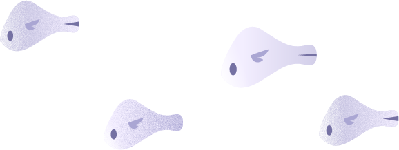
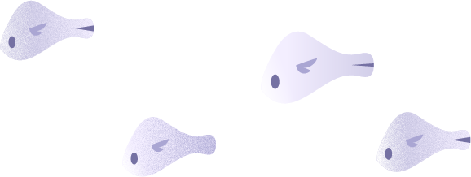

เว็บไซต์นี้ถูกสร้างขึ้นเพื่อเป็นสื่อเชิงโต้ตอบ
(Interactive Website) สำหรับครอบครัวที่มีบุตรหลาน
อายุ 3-5 ปี โดยมีเป้าหมายสำคัญเพื่อช่วยให้พ่อแม่ และ
ผู้ปกครองตระหนักถึงความสำคัญของ โรควิตกกังวล
จากการแยกจาก (Separation Anxiety Disorder)
เข้าใจมุมมองความรู้สึกของเด็กได้ชัดเจนยิ่งขึ้น และ
สามารถรับมือได้อย่างเหมาะสม
(Interactive Website) สำหรับครอบครัวที่มีบุตรหลาน
อายุ 3-5 ปี โดยมีเป้าหมายสำคัญเพื่อช่วยให้พ่อแม่ และ
ผู้ปกครองตระหนักถึงความสำคัญของ โรควิตกกังวล
จากการแยกจาก (Separation Anxiety Disorder)
เข้าใจมุมมองความรู้สึกของเด็กได้ชัดเจนยิ่งขึ้น และ
สามารถรับมือได้อย่างเหมาะสม
แตะเพื่อไปต่อ
Separation Anxiety Disorder
โรควิตกกังวลจากการแยกจาก
โรควิตกกังวลจากการแยกจาก
คือ ภาวะทางจิตใจที่เกิดขึ้นเมื่อเด็กรู้สึกกังวล หรือกลัวมากเกินไป เมื่อต้องแยกจากบุคคล หรือสิ่งที่ผูกพันด้วย มักพบในเด็กอายุตั้งแต่ 3 ปีขึ้นไป หรือวัยแรกเข้าอนุบาล
แตะเพื่อไปต่อ
START


 
